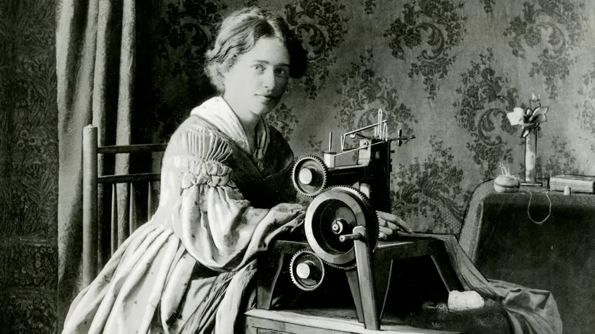
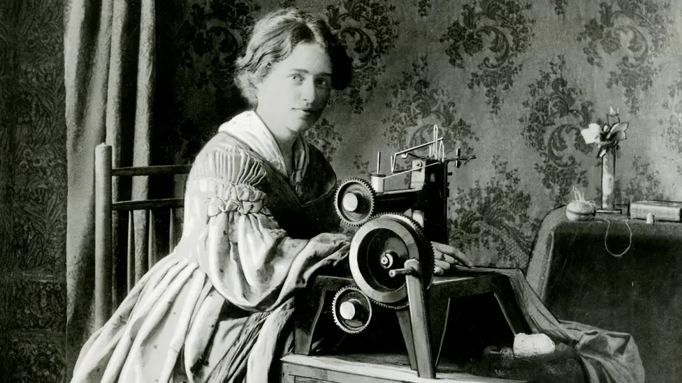

Maddie's portfolio:
This website is to display maddie's projects from sewing 18th century ball gowns to making clothes for their friends that have been requested. Maddie moved to Brixham in 2024, kind of, they were being NomadMaddie living in their van; Winston. Eventually Maddie landed in Brixham and loved it soooo much that they decided to stay. Quite quickly they became part of the community and began a sewing course to make a ball gown for Brixham's Pirate Festival and it went from that to making clothes in a spur of the moment thing.
Where Maddie learned from the best

 


At the sewing course in Brixham, Maddie met Andrew who runs the class and they help him out sometimes when needed in regards to helping people with their projects. He Runs The Workroom in Brixham and his website can be found here!